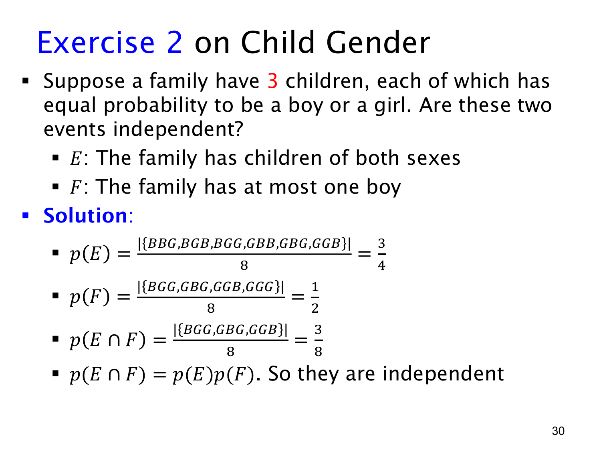

L1.9 · 第 30 页讲解原文
查看这一页课件

三个孩子的例子：相同条件可以变得独立
这页沿用各孩子独立、B/G 各概率 1/2 的模型，但把人数从 2 改为 3。样本空间共有 23=8 个等可能的有序结果。
E 表示两种类别都有，即排除 BBB 和 GGG，因此
E={BBG,BGB,BGG,GBB,GBG,GGB},p(E)=86=43.
F 表示至多一个 B，所以
F={BGG,GBG,GGB,GGG},p(F)=84=21.
两条件同时成立时，不能全是 G，又不能超过一个 B，因此必须恰好一个 B：
E∩F={BGG,GBG,GGB},p(E∩F)=83.
而
p(E)p(F)=43⋅21=83.
所以这一次 E 与 F 独立。
两个孩子时不独立，三个孩子时却独立，说明独立性取决于具体样本空间和概率分布，不能只看事件的文字描述。两事件都涉及所有孩子，也并不阻止它们满足独立等式。
可以进一步检查条件概率：已知 F，四个可能结果中有三个满足 E，比例仍为 3/4；已知 E，六个可能结果中有三个满足 F，比例仍为 1/2。
本题的独立来自这组计数比例恰好满足定义。改变人数或改变 B/G 概率后，必须重新检验，不能直接沿用结论。